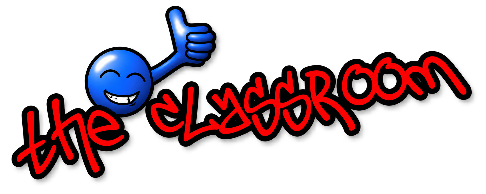
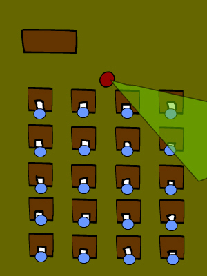
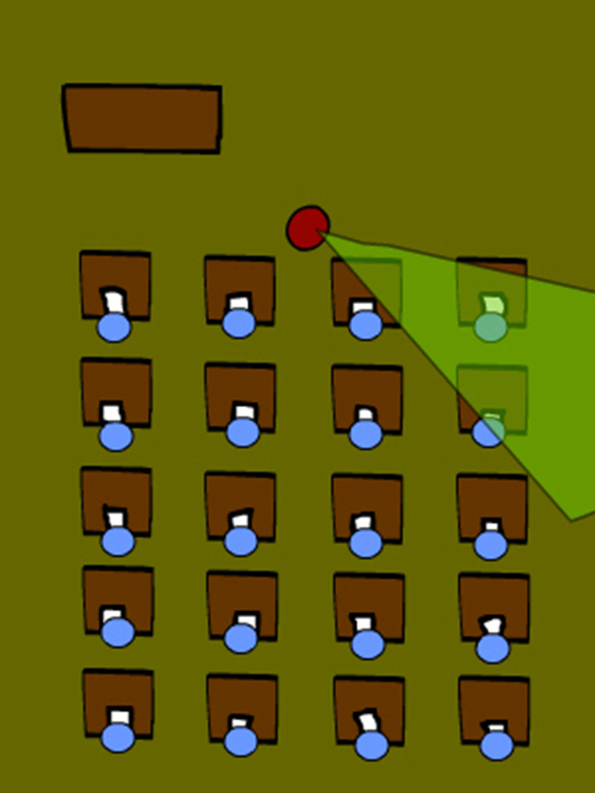
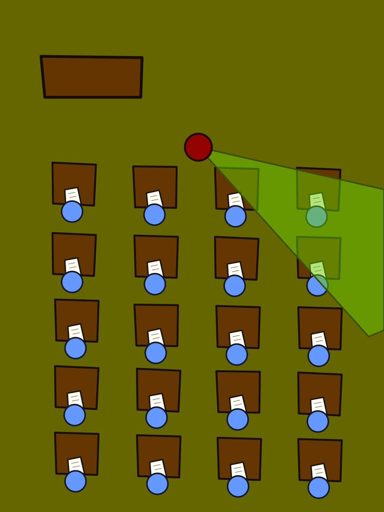
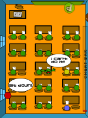
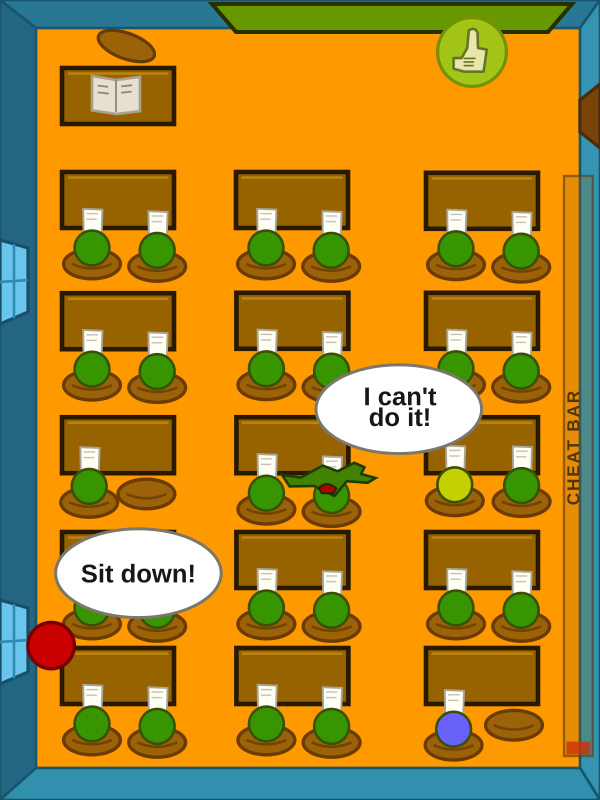
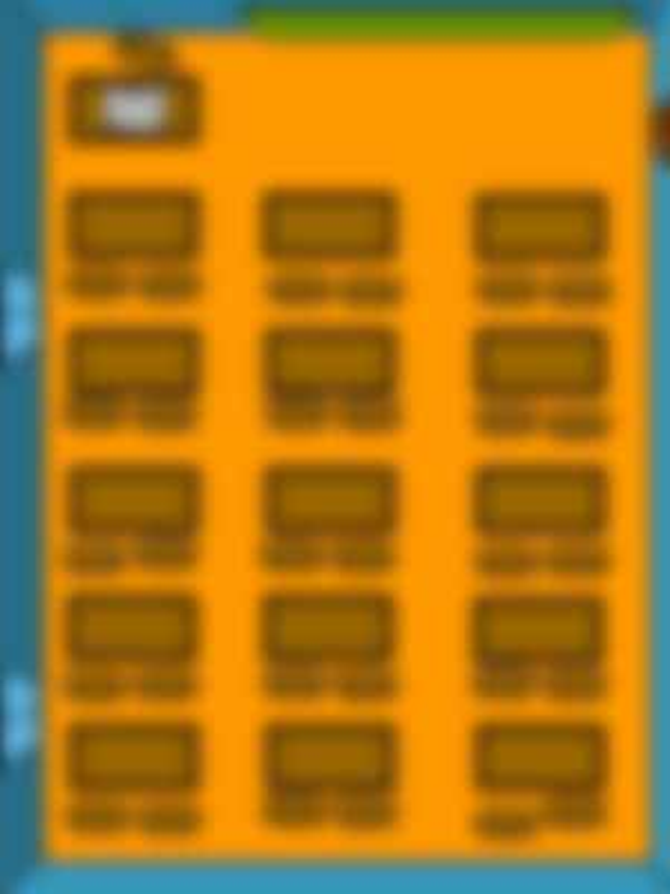
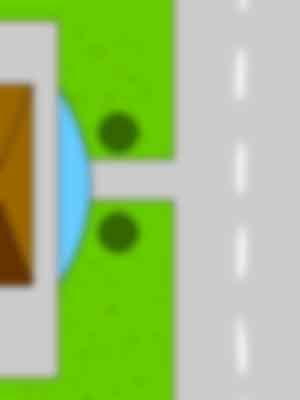
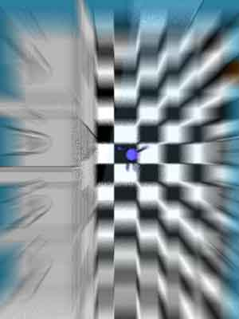
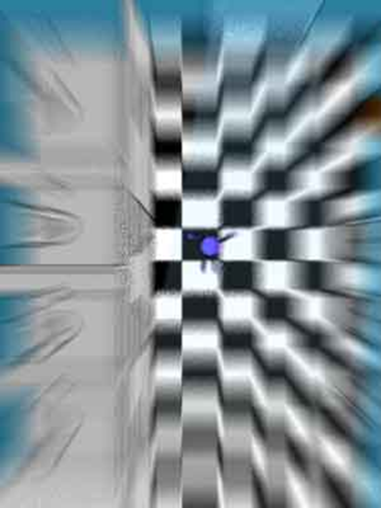

Artwork comparison
Each version is shown at the same size. The 4× files have four times as many pixels across and down. They were made from the original bitmaps.
The Classroom logo

The Classroom 2 bitmaps
Teacher vision example



Classroom dialogue snapshot


Blurred classroom background

Blurred exterior and road

Zoom blur on the checkerboard floor

